Contents
close all; clear; clc; opts = bodeoptions; opts.FreqUnits = 'Hz'; opts.PhaseWrapping = 'on';
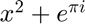
opts.Grid = 'on'; Ts = 1/15000; s=tf('s'); z=tf('z',Ts); %阶跃统计序列段 Start = 90; Stop = 300;
参数辨识结果
Rs=8.40955; Ld=2.09206e-3; Psi=0.019415978; Lq=2.47478e-3; np=14; Ts = 1/15000; Gd = c2d(1/(Rs+Ld*s),Ts,'zoh'); Gd = c2d(1/(Rs+Ld*s)*exp(-1*Ts*s),Ts,'zoh'); Gq = 1/(Rs+Lq*s); Gq = c2d(1/(Rs+Lq*s)*exp(-1*Ts*s),Ts,'zoh');
D轴频域矫正控制器设计
%相位补偿/° phi = 50; %补偿频率/Hz f = 2000; f = 800; % %补偿分贝数 % A = 89.5; %计算频域矫正控制器 alpha_d = (1-sin(deg2rad(phi)))/(1+sin(deg2rad(phi))); Td = 1/(2*pi*f*sqrt(alpha_d)); Kd = 1; Cd = Kd * 1/s * (Td*s+1)/(alpha_d*Td*s+1); Cd = c2d(Cd,Ts,'tustin'); [A,~,~]=bode(Gd*Cd,2*pi*f); Kd = 1/A; Cd = Cd * Kd; figure; bode(Gd*c2d(1/s,Ts,'tustin'),opts); title('D轴电流环等价被控对象'); figure; bode(Gd,Gd*Cd,opts); grid on; title('D轴电流环开环伯德图'); legend('被控对象','频域矫正'); Close_d = feedback(Gd*Cd,1); figure; bode(Close_d,opts); grid on; title('D轴电流环闭环伯德图'); figure; step(Gd,Close_d); grid on; title('D轴电流环单位阶跃响应'); legend('被控对象','频域矫正'); [Gm,Pm,Wcg,Wcp] = margin(Gd*Cd); BW = bandwidth(Close_d); fprintf('D轴电流环超前校正：\n') fprintf('开环截止频率：%.3fHz\n',Wcp/(2*pi)); fprintf('相位裕度：%.3f°\n',Pm); fprintf('相位穿越频率：%.3fHz\n',Wcg/(2*pi)); fprintf('幅值裕度：%.3fdB\n',20*log10(Gm)); fprintf('闭环带宽：%.3fHz\n',BW/(2*pi));
警告: 使用状态空间表示法实现更高效的离散时滞建模。 D轴电流环超前校正： 开环截止频率：800.000Hz 相位裕度：59.419° 相位穿越频率：1704.392Hz 幅值裕度：6.909dB 闭环带宽：1812.409Hz
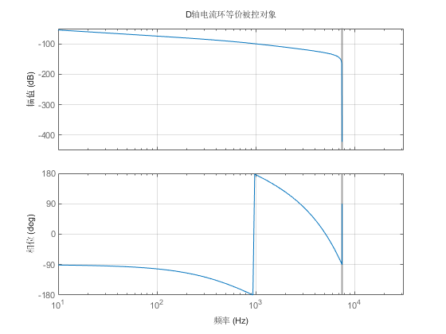
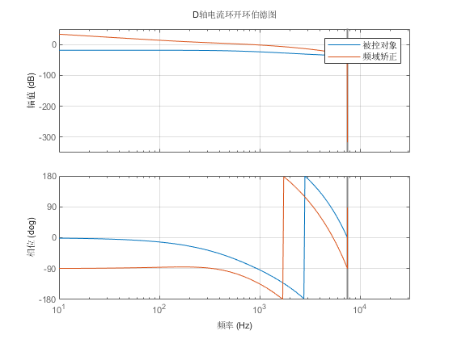
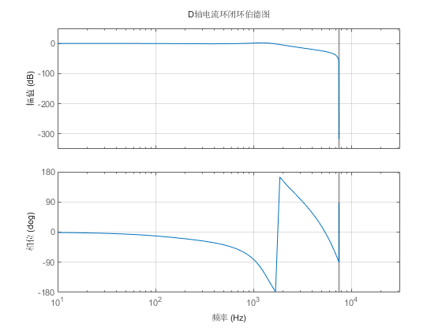
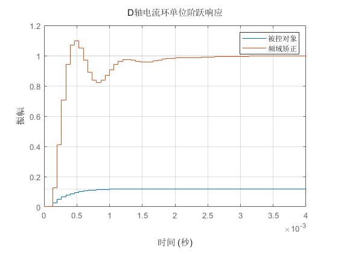
D轴频域矫正控制器正向阶跃验证
data = load('D_Close_P.txt'); input = data(:,10); output_rec = data(:,5); Iq = data(:,6); theta_e = data(:,2); we = zeros(length(theta_e),1); we(1) = 0; for i=2:length(we) we(i)=(theta_e(i)-theta_e(i-1))/Ts * 2 * pi / 360; if(abs(theta_e(i)-theta_e(i-1))>50) we(i)=we(i-1); end end t = Ts:Ts:Ts*(length(input)); Sim_input = [t',input]; Sim_Iq = [t',Iq]; Sim_we = [t',we]; t = Ts:Ts:Ts*(length(input)); Sim_input = [t',input]; out = sim("D_Axis.slx"); output_sim = out.Sim_output.Data; figure; plot(t(Start:Stop),output_rec(Start:Stop), ... t(Start:Stop),output_sim(Start:Stop),LineWidth=2); title('D轴正向阶跃给定的闭环响应对比'); legend('实测输出','仿真输出'); grid on; ylabel('电流/A'); xlabel('时间/s'); cov_sim_rec = cov(output_rec(Start:Stop), output_sim(Start:Stop)); cov_sim_rec=cov_sim_rec(1,2); r=cov_sim_rec/(sqrt(var(output_rec(Start:Stop)))* ... sqrt(var(output_sim(Start:Stop)))); fprintf('D轴正向阶跃给定的闭环相关系数：%.5f%%\n',r*100);
D轴正向阶跃给定的闭环相关系数：99.53992%
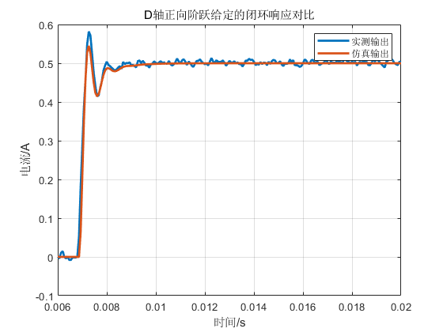
D轴频域矫正控制器负向阶跃验证
data = load('D_Close_N.txt'); input = data(:,10); output_rec = data(:,5); Iq = data(:,6); theta_e = data(:,2); we = zeros(length(theta_e),1); we(1) = 0; for i=2:length(we) we(i)=(theta_e(i)-theta_e(i-1))/Ts * 2 * pi / 360; if(abs(theta_e(i)-theta_e(i-1))>50) we(i)=we(i-1); end end t = Ts:Ts:Ts*(length(input)); Sim_input = [t',input]; Sim_Iq = [t',Iq]; Sim_we = [t',we]; out = sim("D_Axis.slx"); output_sim = out.Sim_output.Data; figure; plot(t(Start:Stop),output_rec(Start:Stop), ... t(Start:Stop),output_sim(Start:Stop),LineWidth=2); title('D轴负向阶跃给定的闭环响应对比'); legend('实测输出','仿真输出'); grid on; ylabel('电流/A'); xlabel('时间/s'); cov_sim_rec = cov(output_rec(Start:Stop), output_sim(Start:Stop)); cov_sim_rec=cov_sim_rec(1,2); r=cov_sim_rec/(sqrt(var(output_rec(Start:Stop)))* ... sqrt(var(output_sim(Start:Stop)))); fprintf('D轴负向阶跃给定的闭环相关系数：%.5f%%\n\n',r*100);
D轴负向阶跃给定的闭环相关系数：99.55014%
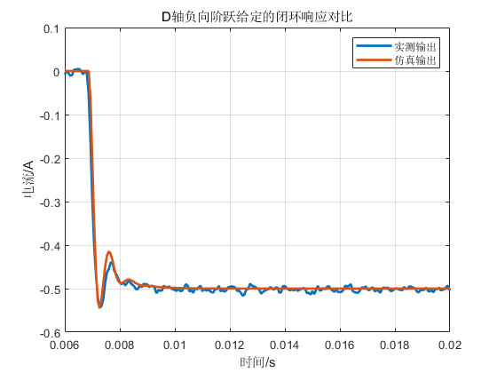
Q轴频域矫正控制器设计
%相位补偿/° phi = 30; %补偿频率/Hz f = 2000; f = 500; % %补偿分贝数 % A = 89.5; %计算频域矫正控制器 alpha_q = (1-sin(deg2rad(phi)))/(1+sin(deg2rad(phi))); Tq = 1/(2*pi*f*sqrt(alpha_q)); Kq = 1; Cq = Kq * 1/s * (Tq*s+1)/(alpha_q*Tq*s+1); Cq = c2d(Cq,Ts,'tustin'); [A,~,~]=bode(Gq*Cq,2*pi*f); Kd = 1/A; Cq = Cq * Kd; figure; bode(Gq,Gq*Cq,opts); grid on; title('Q轴电流环开环伯德图'); legend('被控对象','频域矫正'); Close_q = feedback(Gq*Cq,1); figure; bode(Close_q,opts); grid on; title('Q轴电流环闭环伯德图'); figure; step(Gq,Close_q); grid on; title('Q轴电流环单位阶跃响应'); legend('被控对象','频域矫正'); [Gm,Pm,Wcg,Wcp] = margin(Gq*Cq); BW = bandwidth(Close_q); fprintf('Q轴电流环超前校正：\n') fprintf('开环截止频率：%.3fHz\n',Wcp/(2*pi)); fprintf('相位裕度：%.3f°\n',Pm); fprintf('相位穿越频率：%.3fHz\n',Wcg/(2*pi)); fprintf('幅值裕度：%.3fdB\n',20*log10(Gm)); fprintf('闭环带宽：%.3fHz\n',BW/(2*pi));
警告: 使用状态空间表示法实现更高效的离散时滞建模。 Q轴电流环超前校正： 开环截止频率：500.000Hz 相位裕度：59.019° 相位穿越频率：1237.869Hz 幅值裕度：9.918dB 闭环带宽：1026.428Hz
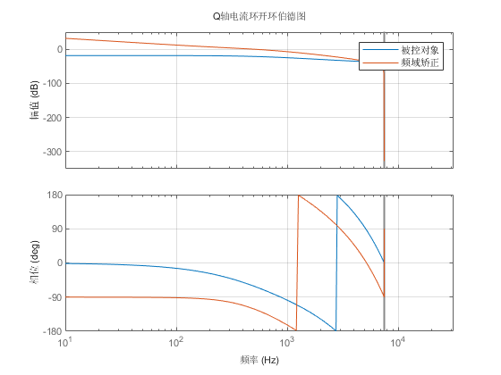
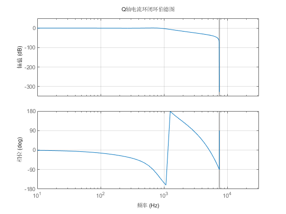
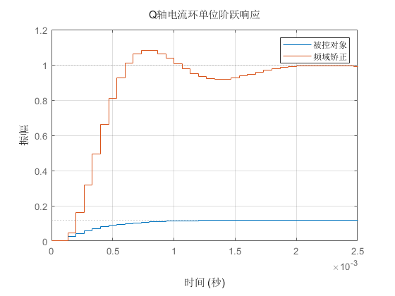
Q轴频域矫正控制器正向阶跃验证
data = load('Q_Close_P.txt'); input = data(:,11); output_rec = data(:,6); Id = data(:,5); theta_e = data(:,2); we = zeros(length(theta_e),1); we(1) = 0; for i=2:length(we) we(i)=(theta_e(i)-theta_e(i-1))/Ts * 2 * pi / 360; if(abs(theta_e(i)-theta_e(i-1))>50) we(i)=we(i-1); end end we = lowpass(we,0.1); t = Ts:Ts:Ts*(length(input)); Sim_input = [t',input]; Sim_Id = [t',Id]; Sim_we = [t',we]; out = sim("Q_Axis.slx"); output_sim = out.Sim_output.Data; figure; plot(t(Start:Stop),output_rec(Start:Stop), ... t(Start:Stop),output_sim(Start:Stop),LineWidth=2); title('Q轴正向阶跃给定的闭环响应对比'); legend('实测输出','仿真输出'); grid on; ylabel('电流/A'); xlabel('时间/s'); cov_sim_rec = cov(output_rec(Start:Stop), output_sim(Start:Stop)); cov_sim_rec=cov_sim_rec(1,2); r=cov_sim_rec/(sqrt(var(output_rec(Start:Stop)))* ... sqrt(var(output_sim(Start:Stop)))); fprintf('Q轴正向阶跃给定的闭环相关系数：%.5f%%\n',r*100);
Q轴正向阶跃给定的闭环相关系数：96.18927%
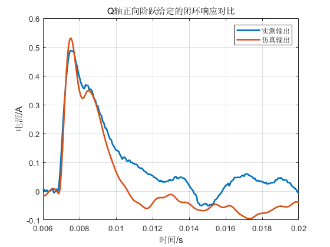
Q轴频域矫正控制器负向阶跃验证
data = load('Q_Close_N.txt'); input = data(:,11); output_rec = data(:,6); Id = data(:,5); theta_e = data(:,2); we = zeros(length(theta_e),1); we(1) = 0; for i=2:length(we) we(i)=(theta_e(i)-theta_e(i-1))/Ts * 2 * pi / 360; if(abs(theta_e(i)-theta_e(i-1))>50) we(i)=we(i-1); end end we = lowpass(we,0.1); t = Ts:Ts:Ts*(length(input)); Sim_input = [t',input]; Sim_Id = [t',Id]; Sim_we = [t',we]; t = Ts:Ts:Ts*(length(input)); Sim_input = [t',input]; out = sim("Q_Axis.slx"); output_sim = out.Sim_output.Data; figure; plot(t(Start:Stop),output_rec(Start:Stop), ... t(Start:Stop),output_sim(Start:Stop),LineWidth=2); title('Q轴负向阶跃给定的闭环响应对比'); legend('实测输出','仿真输出'); grid on; ylabel('电流/A'); xlabel('时间/s'); cov_sim_rec = cov(output_rec(Start:Stop), output_sim(Start:Stop)); cov_sim_rec=cov_sim_rec(1,2); r=cov_sim_rec/(sqrt(var(output_rec(Start:Stop)))* ... sqrt(var(output_sim(Start:Stop)))); fprintf('Q轴负向阶跃给定的闭环相关系数：%.5f%%\n',r*100);
Q轴负向阶跃给定的闭环相关系数：98.74872%
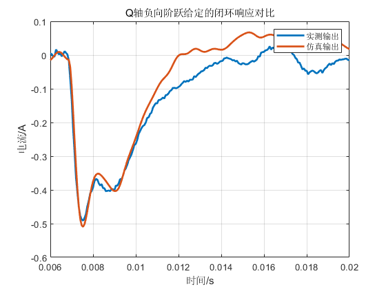